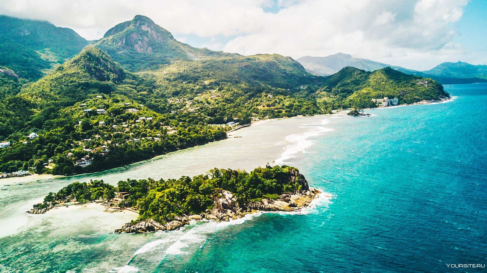

Сейшельские острова — островное государство в Восточной Африке. Расположено в западной части Индийского океана, немного южнее экватора, примерно в 1600 км к востоку от африканского материка, севернее Мадагаскара.
В состав республики входят 115 островов, обитаемы только 33. Площадь государства — 459 км². Самый большой остров — Маэ (157,3 км²). На нём находится столица государства — Виктория и единственный в стране международный аэропорт.
Республика Сейшельские Острова — наименее населённая африканская страна. По оценкам на 2023 год, население страны составляет 97 617 человек.
Культура и общество Сейшельских островов представляют собой эклектичную смесь французских, британских и африканских влияний с более поздними вкраплениями китайских и индийских элементов.
Страна является членом ООН, Африканского союза, САДК, Франкофонии и Содружества Наций.
